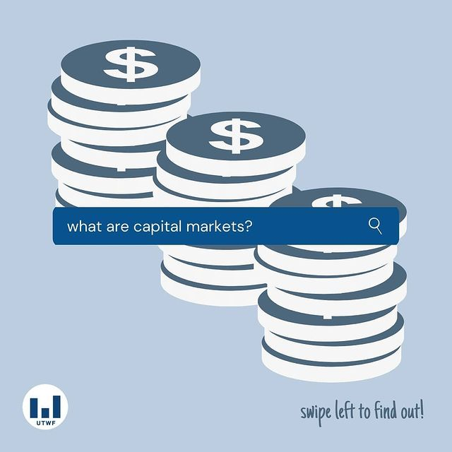

As engineers, it is important to analyze the societal and environmental impacts of engineering designs. Throughout the Design for the Environment course, I have learned some tools to analyze both the environmental and societal impacts of different projects; this includes ISO-compliant Life Cycle Assessment (LCA), as well as different tools and guidelines to assess the societal and economical impacts.
While I have demonstrated my basic ability to account for environmental and societal impacts through coursework, I still have to improve my skills in this field in order to fully account for the outcomes of my activities as an engineer. However, I am interested in designs that minimize environmental impacts and promote sustainability - for example, I was a part of Carbon Cutting Racers Design Team, where we designed fuel-efficient cars out of carbon fibers. Although my career aspirations does not necessarily involve a lot of engineering designs, I would still like to pursue my interest in sustainable technologies that can be used to mitigate negative environmental and societal impacts.
The entries below demonstrate how I have demonstrated my ability to account for environmental impacts, particularly within the context of the Design for the Environment course.
Streamed Life Cycle Assessment

As part of the term project for the Design for the Environment course, my team analyzed the environmental impacts of K-Cups and instant coffee so that our client (Deloitte) can choose an appropriate option for providing coffee to its employees. To make a preliminary recommendation, we conducted a streamlined life cycle assessment (SLCA), which uses matrix for qualitative assessments of environmental impacts.
To properly perform SLCA, I obtained data about emissions and residues from research papers and relevant databases online. I also used tools like Solidworks to model coffee products; this allowed the team to understand how much material was used for product packaging. Additionally, I wrote the relevant section of the recommendation report to explain the environmental impacts and justify why instant coffee has a lower impact relative to K-Cups.
Through this experience, I learned how to evaluate environmental impacts of projects qualitatively given limited data. I also demonstrated my ability to consider environmental impacts at all stages of the lifecycle; in particular, I conducted detailed research to demonstrate that the environmental impacts are highly sensitive to consumer behaviour. This improved the quality of our project since the client could now take actions to encourage sustainable consumer behaviour, in addition to choosing a more environmentally-friendly option.
Visualizing Data Using Charts

For the term project in the Design for Environment course, my team was tasked with evaluating the environmental impacts of K-Cups and instant coffee, so that the client (Deloitte) can decide which option to use when providing coffee for employees and guests. To communicate our recommendation, we submitted a 7500-word report outlining the environmental, economical, and societal impacts of both alternatives.
One of my role was to produce high-quality charts and graphics using Python and Excel to communicate the team's findings effectively. My particular area of focus was to visualize the environmental impacts in a way that enhanced the team's argument to recommend instant coffee over K-Cups. This experience taught me a few things:
- I learned how to choose the best type of visualization based on the goal of the project.
- I learned how to explore unorganized datasets to find meaningful information that could be visualized to strengthen the team's argument.
- When coding visualization tools in Python, I learned best practices for commenting and writing my code so that other people can understand what I am trying to accomplish.
This experience will directly tie to my upcoming PEY Co-op at Scotiabank, where I will be responsible for creating data dashboards to display insightful information so that senior stakeholders can make important business decisions. While the work I took on in this project is a lot smaller in scale than what I would actually do at work, a lot of the lessons learned can be carried over so that I can make a significant contribution on my team.
External Events Director - UofT Women in Finance
As the external events director for UofT Women in Finance (UTWF), my main responsibility is to organize and execute events that target female STEM students who are interested in a career in finance. In this role, I have demonstrated my communication skills by maintaining positive relationships with 3 different firms to host a total of 4 events throughout the school year. In order to bring successful events to our members, I had to balance the members' needs with the interests of these companies - I did this by clearly communicating our expectations upfront but also being open to diffrent suggestions that the firms would bring up.
In addition, I demonstrated my leadership skills by working effectively with 5 other executive members in the club to coordinate event schedules and promotions. For example, I worked collaboratively with our promotions director to create a campaign with our target audience in mind; this resulted in 150% increase in the event turnout. As a senior member in the club, I also demonstrate my leadership by mentoring junior executive members to foster strong relationships with professionals in the financial industry.